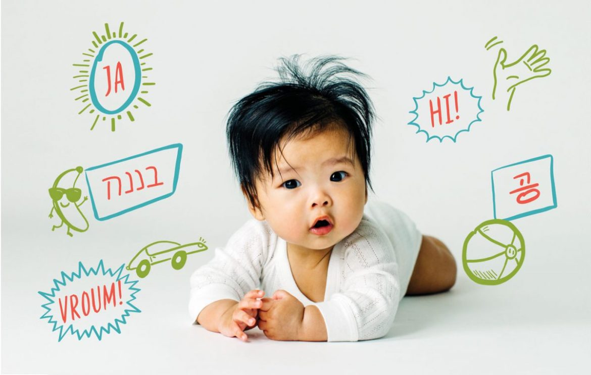

Los individuos adecuan su manera de hablar según las características de la situación a la que se enfrentan, el objetivo del acto comunicativo, el tema del que se habla y el vínculo entre los interlocutores. Por ejemplo, cuando se habla con los amigos se hace de un modo diferente a cuando se habla con un profesor o con un adulto.
En las primeras etapas del desarrollo infantil, es imprescindible el papel de los padres como agentes que estimulan la adquisición de las diferentes habilidades. En esta etapa inicial el niño amplía su capacidad de escucha y manifiesta mayor atención. Por ello, debemos aprovechar para ayudarles con la estimulación del lenguaje. Ante la presencia de algún tipo de retraso o trastorno del neurodesarrollo esta estimulación es aún de mayor de importancia. A continuación proponemos una serie de estrategias para estimular y favorecer el desarrollo lingüístico de los más pequeños.